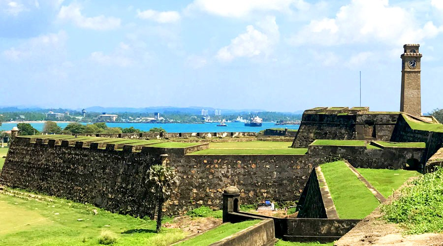
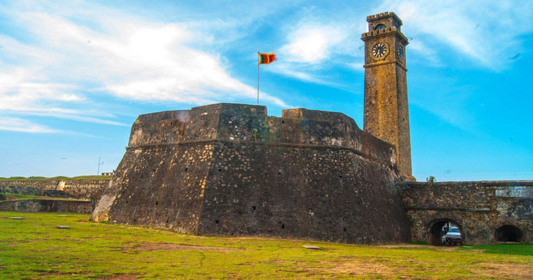
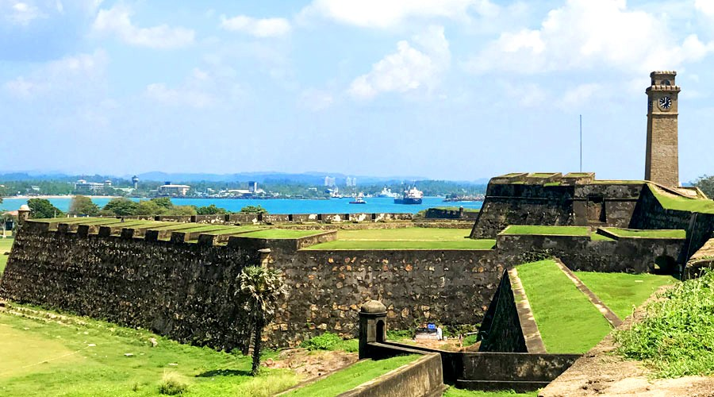
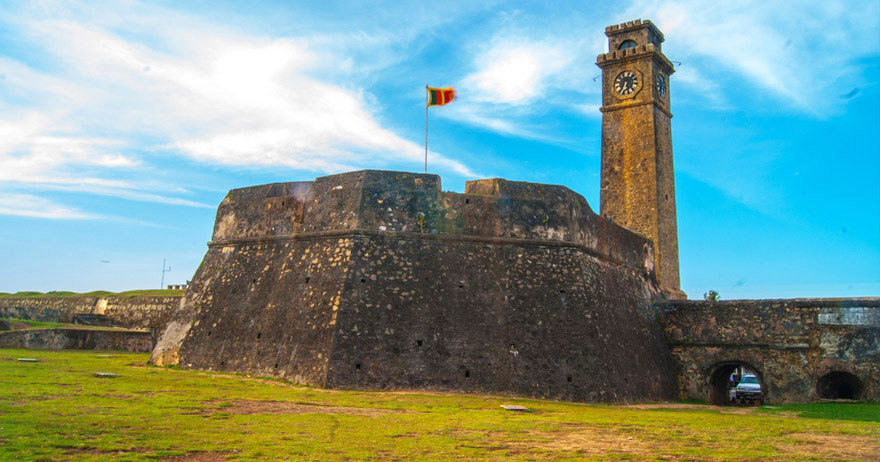

Galle seaport city is located 116 km south of Colombo in the Southern province of Sri Lanka.
Reaching LocationGalle can be reached by Colombo-Galle-Matara (A2)
main road as well as by southern railway line running from Colombo to Matara via Galle.
 


